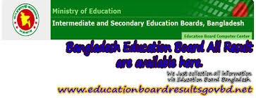

List of Intermediate and Secondary Education Boards in Bangladesh
Article
Talk
Read
Edit
View history
Tools
From Wikipedia, the free encyclopedia
Education system in Bangladesh
The district-based Boards of Intermediate and Secondary Education in Bangladesh manage the country's three-tiered education system at the primary, secondary and higher secondary level. They are responsible for conducting the examinations for the Secondary School Certificate (S.S.C), the Higher Secondary (School) Certificate (H.S.C) level public examinations. The boards are also responsible for the recognition of private sector educational institutes.[1][2]
1
- Board of Intermediate and Secondary Education, Barisal
- Board of Intermediate and Secondary Education, Chattogram
- Board of Intermediate and Secondary Education, Cumilla
- Board of Intermediate and Secondary Education, Dhaka
- Board of Intermediate and Secondary Education, Dinajpur
- Board of Intermediate and Secondary Education , Jashore
- Board of Intermediate and Secondary Education, Mymensingh
- Board of Intermediate and Secondary Education, Rajshahi
- Board of Intermediate and Secondary Education, Sylhet
- Two alternative education boards:
Bangladesh Madrasah Education Board
Bangladesh Technical Education Board.
References